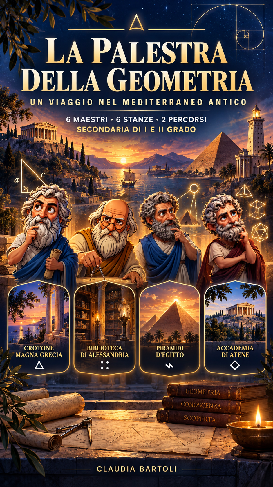

Scegli il tuo percorso
Allenati con i grandi maestri e conquista i mantelli della conoscenza.
Potrai cambiare percorso dalla mappa senza perdere i progressi dell’altro livello.

Allenati con i grandi maestri e conquista i mantelli della conoscenza.
Potrai cambiare percorso dalla mappa senza perdere i progressi dell’altro livello.